Ilustração do Recife durante a tomada dos holandeses.
Percurso da invasão holandesa, da praia de Pau Amarelo (na direita) até o Recife (na
esquerda).
Primeiro, os holandeses desembarcaram na praia de Pau Amarelo. Em direção à Olinda, atravessaram a
trancos e
barrancos o terreno alagado e todo cortado por rios e riachos, onde um deles é o Rio Doce. Foram
caminhando pela praia
avistando o morro lá longe. Emboscadas de tropas de nativos aliados dos portugueses foram organizadas,
mas
falharam. No fim das contas, invasores davam força a um sentimento de libertação do julgo português,
julgo esse que não convencia nem a todos os "aliados" nativos. Os invasores holandeses relataram toda a
caminhada até Olinda em detalhes, onde contam que muitos guerrilheiros nativos simplesmente davam meia
volta
à mata, ou apontavam o caminho para Olinda [3].
Nenhuma das tentativas locais de defesa vingou e os holandeses alcançaram Olinda. O que aconteceu
imediatamente antes deles chegarem à vila é um dos maiores eventos da história de Olinda na MINHA
opinião (maior do que o carnaval
de 2018). Assim que a população da vila se convenceu de que nada pararia os holandeses, todos entraram
em
um desespero coletivo, uma catarse épica que foi descrita por autores diferentes.
O livro de Evaldo Cabral de Mello "O Brasil Holandês" apresenta uma ótima síntese introdutória dos
textos (que eu uso como referência nesse).
Em Olinda a essa altura do combate contra os invasores só havia restado a gente rica. Seus escravos já
haviam sido mandado para a linha de frente da guerra muitas horas antes e nada surtia efeito. Então
chegou a
hora dos brancos, jovens ou velhos, pegarem em armas. Há relatos de pais emocionados beijando as esposas
e
suas crianças pois não sabiam se retornariam, há relatos de famílias que deixaram o jantar preparado
para
quando os maridos e filhos retornassem, entre outros dramas. Mais uma vez, nenhum efeito foi surtido.
Momentos antes da entrada dos holandeses pelo norte da cidade velha, o Amparo, as pessoas que haviam
ficado
começaram desesperadamente a reunir o que podiam carregar de valor em seu corpo e suas roupas e
começaram a
correr pelas ruas em direção às matas que até hoje envolvem Olinda velha. Mais uma vez os relatos contam
as
madames deixando cair suas pérolas indianas pelas ruas, as pratas africanas pelos matagais, senhoras com
os
peitos arranhados por espinhos, donzelas desmaiadas, donzelos chorando, "o marido não sabia da mulher,
nem a
mãe [sabia] dos filhos e filhas" e tantas outras cenas desesperadoras que remetem ao imaginário popular
do
estouro de Tapacurá.
Só é engraçado porque é o desespero dos colonizadores. A descrição é muito particular e eu pessoalmente
adoro ler de tempos em tempos. Ainda soa muito como uma grande baixaria dos dias de hoje. Outro
exemplo aconteceu na invasão
holandesa à Paraíba, onde há relatos de portugueses gritando "Flamengo cornudo!" e sendo respondidos
por holandeses gritando "Espanhol cornudo!". Enfim, um fuxico que parece melhor descrever uma guerra do
que
as pataquadas sem tamanho de Hollywood.
Quando os holandeses chegaram na vila abandonada, o próprio circo da noite do terror do Mirabilândia, só
precisaram saquear e botar fogo em Olinda. A cidade veio abaixo. Poucas construções resistiram, como o
prédio do atual Casbah, próximo ao Carmo. O próximo passo holandês foi descer para o porto, que agora
não
havia como resistir. Ataques por terra e pelo mar garantiram o Recife aos holandeses que, numa
estratégia
tão eficiente que parece ter sido explanada por algum X-9, neutralizaram todo o litoral recifense do
domínio
português. Os navios entraram e o porto foi tomado. Fim da ópera.
🔥🔥🔥
ARQVITECTVRA ET URBANISMVS
VOLTANDO ao assunto. Os Portugal já haviam desenhado um esquema para a produção do porto. Os Holanda foi
lá
e se apropriou. Após o estabelecimento da administração holandesa (que demorou alguns meses), a vila do
porto continuou a ser vila, e a sede da administração foi transferida de Olinda para a ilha de
Antônio Vaz,
que é a ilha dos atuais bairros de Santo Antônio e São José.
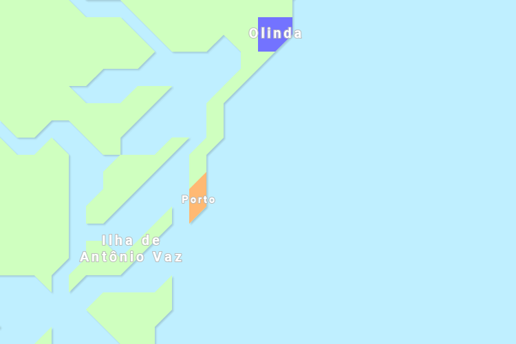
O espaço físico onde ficavam a casa do governador holandês, o palácio do governo e seus jardins é o
mesmo
espaço hoje designado pelo bairro de Santo Antônio. Nas áreas de parte de Santo Antônio e do bairro de
São
José passaram a se estabelecer os serviços de apoio à vida comum holandesa, incluindo um pátio onde
ocorria
a feira (o espaço da atual praça do Diário). Na vila, pouco a pouco os pescadores foram substituídos por
homens de negócio dos comércios holandeses. Muitos deles eram protestantes e judeus, o que caracterizava
pra
eles (e pra alguns historiadores ainda hoje) uma "sociedade de convivência plural"... só porque não eram
todos católicos kk ! Uma cidade para todes ! (menos para negres).
As pessoas racializadas continuaram subjulgadas ao serviço braçal e doméstico. Indígenas que não
se adaptavam à vida entre brancos ou eram enviados a uma aldeia, uma instituição jesuíta
localizada fora da
convivência da cidade onde os nativos eram "educados" para a vida urbana, ou eram expulsos para o
interior.
A partir 👇daqui👇 no texto já começamos a observar espaços físicos dos tempos coloniais muito
característicos de uma fábrica mesmo. Olinda e a Mauritsstaad como sendo a diretoria da fábrica, os
armazéns do Recife como alfândega, a aldeia como os recursos humanos e alojamento
da fábrica,
mas não se limitando a esses espaços. Outros ainda são muito pertinentes como a fábrica
propriamente
dita (os espaços de produção), as áreas de lazer e os caminhos que interligavam esses
espaços.
Do estabelecimento da "Cidade Maurícia" até os dias atuais, grandes mudanças hegemônicas atingiram
Pernambuco, mas a exploração nunca acabou. Não houve uma ruptura sequer desse conflito de classes
que
pudesse refletir em como a cidade se organiza. A nossa cidade apareceu e é mantida até hoje como uma
empresa, como uma fábrica. Em contraste, as cidades dos nossos colonizadores e de outros locais do mundo
apareceram como pontos de comércio, como paragens para viajantes, como portos para receber matéria-prima
etc. Nossas vidas são parte de uma linha de produção: criança na escola, adulto como mão de obra,
e depois
o descarte. A organização da vida dessa forma é uma ideia moderna que tem o liberalismo como eixo
estrutural. MAS, presenciamos contraposições a essas ideias também, como
quando da revolução de São Tomé, do Haiti e da revolução de 1917.
O texto "Kalungas - São Tomé" conta dessa revolução e seus desdobramentos em Pernambuco. Link ali: no
fim da página.
A partir da próxima seção, vamos dividir a história do Recife em três partes, três colonizações, que nos
ajudam a entender cada vício que os poderes carregam ao longo dos tempos e analisar os espaços da
cidade-fábrica em cada uma das partes. São elas o Recife português-holandês, o Recife
inglês e o
Recife americano.
🌾🌾🌾
A empresa portuguesa
Não havia UMA estrutura na cidade cuja função não fosse a produção e escoamento de mercadorias: da
diretoria localizada nos casarões de Olinda, nos palácios da "Mauriceia" e nas
casas-grandes,
até as
fábricas das fazendas e engenhos de açúcar. Para que a produção de magnitude
continental se
mantivesse
funcionando, milhares de vidas foram exploradas. Como naquela época a "robótica" ainda não havia
aparecido
para disfarçar o racismo da ideia que "algumas pessoas existem para servir", havia instituições
explicitamente dedicadas a disciplinar e doutrinar a massa de escravizados cativos e de rebeldes
detratores.
Eram elas, respectivamente, a senzala para negros e indígenas que servia como o alojamento dos
trabalhadores da cidade-fábrica, e o pelourinho para negros e indígenas ou a aldeia exclusivamente para
os
indígenas como os recursos humanos dessa empresa.
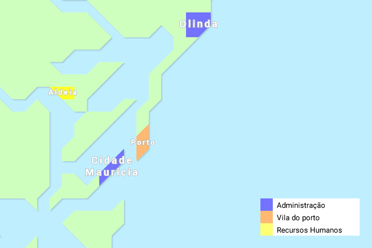
A sede do governo holandês na ilha de Antônio Vaz era conhecida por Cidade Maurícia, ou
Mauritsstaad na língua deles.
Como os escravizados eram tratados como mercadorias, assim como objetos, eles possuiam também espaços e
regras dedicadas a sua "regulação" na alfândega.
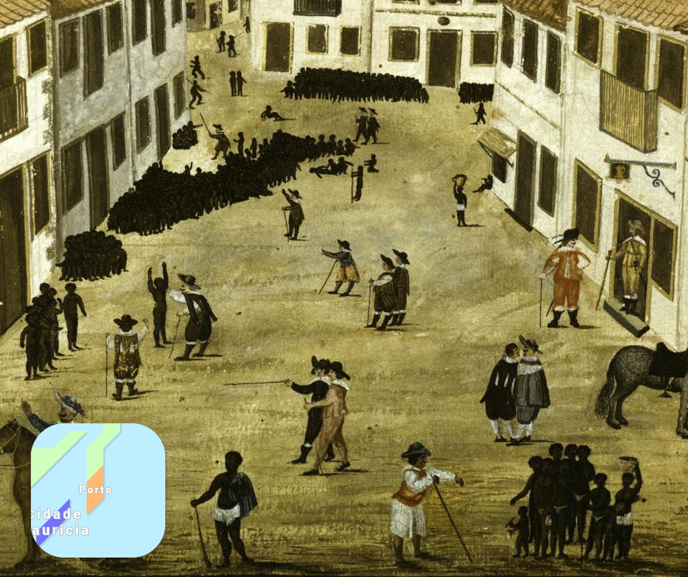
O mercado negro da Rua do Bom Jesus. Pintura por Zacharias Wagner (1634).
Os africanos que chegavam pelo porto do Recife eram "estocados" em literais armazéns de gente na vila.
De
lá eram agrupados como animais em exposição na atual Rua do Bom Jesus, que era o mercado de negros do
Recife
(aspecto completamente apagado daquela rua) [4]. Porém, nem todos os negros que conseguiam desembarcar
em
Pernambuco seriam vendidos nesse mercado. Aliás, a maioria já era
encomendada com destinatário certo, contados como gado. "43 negros para Baltazar da Fonseca" diz o
relatório
com os valores da compra realizada por Baltazar, um judeu sócio dos senhores holandeses, cujos braços
"comprados" construíram a primeira ponte do Recife.
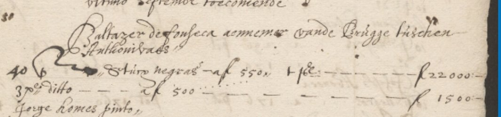
Trecho do contrato de compra de Balthazar da Fonseca. Em 1641 ele comprou 43 homens de
Elmina, Ardra e Calabar para a construção da ponte do Recife [5].
Muitos inclusive não conseguiam completar a travessia. Os que desembarcassem mas morressem durante os
primeiros momentos no porto tinham seus corpos descartados em vala
comum em algum ponto do Recife Antigo, onde tal cemitério popularmente se acredita ser onde hoje está a
Cruz
do Patrão, mas que talvez seja em um ponto mais ao norte [6].
Para a punição dos rebeldes, havia o pelourinho. Um pilar de cimento ou madeira erguido no centro da
vila
(o de Recife ficava próximo ao atual Marco Zero) onde os escravizados eram amarrados para uma exibição
pública de violência tanto para o divertimento branco, como para a educação preta, semelhante e
antecessor
aos "linchamentos" que ocorreram nos Estados Unidos.
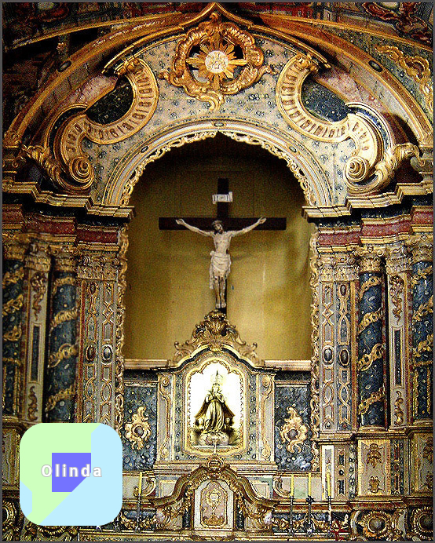
Detalhe do imponente altar na igreja da Misericórdia em Olinda.
A igreja católica servia aqui como pilar da violência contra os povos racializados, trazendo
justificativas
filosóficas para a subjulgação dos escravizados, mantendo o lucro dos senhores, e participando com seus
padres e freiras na doutrinação
dos
escravizados detratores. Sua ideologia estava presente nas mentes da cidade-fábrica e se materializava
durante as
missas:
só os brancos as assistiam do lado de dentro da igreja, enquanto os escravizados ficavam ao fundo ou
fora dela. Ao mesmo tempo que a igreja segurava a espada, ela
segurava
a cruz. Ela era uma das áreas de lazer e ócio dos senhores. No centro do
Recife várias igrejas foram
construídas e cada uma tinha seu horário de missa, permitindo às famílias dos senhores quais horários
atender e para qual santo se devotar. Além disso, havia capelas pelas fazendas com padres ordenados pela
diocese para que os senhores e suas famílias pudessem pedir a papai do céu "que perdoassem os ingênuos
racializados" 🙏
A igreja demonstrava seu poder também
arquitetonicamente. O estilo barroco comum nas colônias portuguesas posicionava as igrejas como
imponentes
estruturas urbanas de propaganda branca. Os protestantes e judeus eram mais discretos no que toca a
manifestação religiosa, mas igualmente essas pessoas nada fizeram a não ser a continuação da subjulgação
cultural para a justificação da escravidão (e produção colonial).
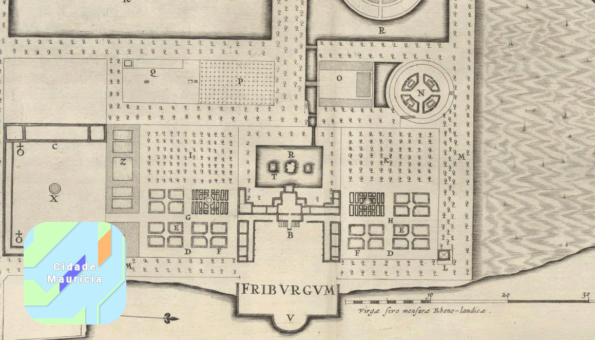
Trecho do plano do palácio de Maurício de Nassau, sede da administração holandesa, e
seus jardins exuberantes ao redor.
As tradições urbanas para as áreas de lazer protestantes se davam de outras
formas.
Os jardins dos palácios eram utilizados como vitrines da grandeza do império da Holanda, que ensaiam as
primeiras formas de "especulação", usando seus jardins como demonstração de imponência para atração de
investimentos. Esses equipamentos de lazer com suas alamedas para passeio à cavalo eram usufruidos
apenas
pelos chefes do governo holandês. Não havia no Recife da época outro jardim projetado por brancos. Ainda
para gozo dos governadores, havia um palácio chiquérrimo na beira do Capibaribe com uma
Boa
Vista
para o continente (daí o nome do bairro). A tal "primeira cervejaria" sempre mencionada é outro
equipamento para as classes dominantes. Tadinhos dos colonizadores, eles
precisavam de descanso e lazer para manter sua saúde mental e assim poder explorar os nativos e os
africanos
😭
Além dos senhores e escravizados havia também uma expressiva terceira camada da sociedade composta por
fazendeiros, pelos capangas dos senhores de engenho, pelos trabalhadores livres e pelas pessoas que
viviam
do comércio. Alguns desses possuiam seus próprios escravos mas não possuíam fazenda própria. Nem todos
eram brancos, inclusive, nesse recorte. Muitas famílias racializadas livres
desempenharam o trabalho de cultivo de plantações para consumo local, da pesca, da pecuária, da
confecção de roupas e
também da diversão dos senhores e demais habitantes. Essas famílias habitavam as vilas dentro dos
engenhos
ou já habitavam casarios na cidade, um outro tipo de alojamento de
trabalhadores da cidade-fábrica.
Essas vilas dariam origem a alguns dos bairros da cidade, geralmente ao redor das igrejas das fazendas,
como
a de Nossa Senhora dos Aflitos.
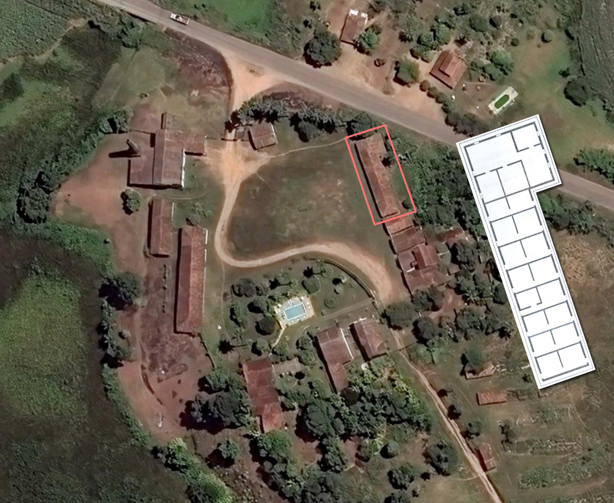
Imagem do Engenho Uruaé em Condado, Pernambuco hoje. Em destaque a antiga senzala
da fazenda e sua planta baixa [7].
Igualmente, toda fazenda possuia uma estrutura intencionalmente precária para o alojamento dos
escravizados.
As senzalas estavam mais para um amontoado de negros. Muito apertadas e administradas pelos capangas dos
senhores, eram geralmente um enfileiramento de quartinhos (muito parecidas com as
penitenciárias atuais) que dava para um pátio central. Sua localização na fazenda era estratégica para o
fácil deslocamento ao serviço, havendo
relatos de varandas de casa-grande que davam vista para a senzala, mas deslocada o suficiente para criar
certa separação física das vivências negras e brancas [8]. Comumente as senzalas davam também para um
vão de utilização comum dos escravizados, um terreiro. Relatos holandeses descrevem essas áreas como
sendo utilizadas para
o plantio próprio dessas famílias (que dividiam as horas do dia entre a servidão e a subsistência) e
para práticas religiosas discretas, assim como para os funerais das muitas vítimas dessa exploração.
Uma outra estrutura própria para a triagem dos indivíduos escravizados recém-desembarcados foi o
Hospital dos Lázaros, construído no século 18 [4]. As leis por todo o Brasil que regulamentavam que os
escravizados
precisavam ficar em quarentena nesse espaço por oferecer "risco de contaminação" ao resto da população
escravizada (e portanto prejuízo para a cidade-fábrica), desenham as nossas primeiras leis sanitárias
[10].
Recursos ironicamente humanos.
Inclusive, no momento de escrita desse texto, a atual Santa Casa de Misericórdia, que administra
o "Hospital dos Lázaros", falha em não expor sua história em seu relato institucional disponível em seu site. Sequer cita a
relação do hospital com escravizados. Não é que a história precisa ser omitida por ser violenta, mas é
fundamental que ela seja respeitosamente relatada para que o Recife reforce sua consciência sobre si e
sobre o tema.
Um comentário adicional sobre a vida dos escravizados é a atuação dos capangas dos senhores. Chamados
também
durante a história de "capitães do mato", esses homens eram em sua grande maioria homens racializados
livres. Dividiam moradia com os fazendeiros nas vilas dos engenhos, e serviam como uma proto-polícia
para a
manutenção da produção e riqueza dos senhores.
Em adição, havia o local de trabalho da grande maioria de escravizados, o engenho, as roças e as margens
dos
rios de onde se pescava: as fábricas. As condições de trabalho nesse lugares,
principalmente no cultivo
da cana, na moenda e na caldeira do engenho acarretavam em mutilações, queimaduras, entoxicação e
frequentemente em mortes. Absolutamente nada faria a "roda" dessa "economia" parar, se não a
violência...
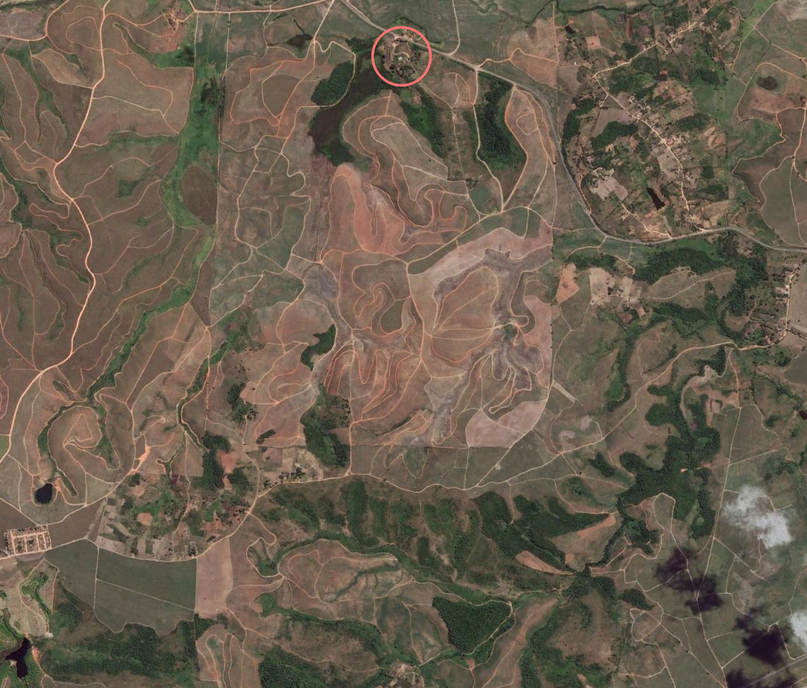
Lembra do Engenho Uruaé (em destaque)? Na imagem anterior é possível observar uma
estrada que parte do pátio central para baixo. Ela se liga ao imenso espaço de plantio da fazenda,
colocada em perspectiva na imagem acima.
Por último, as fábricas eram ligadas aos serviços da cidade, ao porto e aos prédios da administração
pelos
caminhos do Recife. As estradas e os rios eram, curiosamente, os espaços
mais democráticos daquela
época dentro de suas circunstâncias. Por esses caminhos se cruzavam os escravizados de diferentes
engenhos.
Se cruzavam escravizados com fazendeiros de diferentes engenhos. Se cruzavam fazendeiros. Se cruzavam
padres, fazendeiros e senhores. Se cruzavam escravizados e os demais. Mas não se iludam por essa
democracia:
a divisão social nesses espaços se dava pela forma de movimento. Enquanto uns carregavam, outros eram
carregados. Enquanto uns iam à pé, outros cavalgavam. Enquanto uns remavam, outros apenas apreciavam o
passeio de barco.
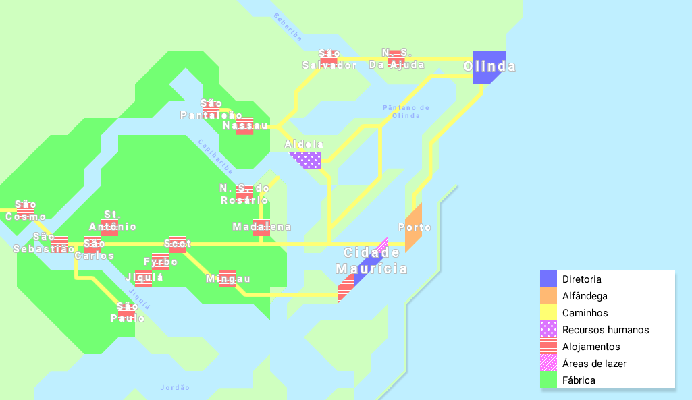
Esquema da cidade-fábrica colonial. Representados em vermelho/listrado os engenhos mais
próximos do porto e em amarelo alguns dos caminhos ligando os setores dessa empresa.
Para escapar dessa exploração, os escravizados juntavam-se em comunidades isoladas da cidade-fábrica, os
quilombos. A fuga desses indivíduos era duramente reprimida, ela significava o prejuízo dos
senhores! Quando os holandeses chegaram em Recife, eles se aliaram aos portugueses na guerra contra
essas comunidades. Os quilombos representavam o fim da empresa colonial. Eram sociedades
comunitárias, cuja organização não visava o lucro de uma metrópole, nem a manutenção de um reino
intercontinental: era a vida de subsistência com os insumos que a terra ao redor dava, organizada para
sua
defesa, inclusive apropriando-se da violência. Além do prejuízo econômico dos colonizadores, os
quilombos representavam também
uma nova forma de organização social que os brancos tentavam evitar ao máximo que ela fosse conhecida
pelos demais escravizados, mantendo-os distantes não apenas fisicamente, mas ideologicamente também.
Essa organização social é até hoje o terror
do senso comum liberal, pois nesse sentido nada mudou: o quilombola ou qualquer indivíduo que se
organize contra sua
exploração é comumente acusado de "vagabundo", visto como delinquente, rechaçado como estranho aos
"costumes".
Agora se liguem na função que cada local da cidade-fábrica representa. Nunca foi o jardim para o
descanso do
negro, mas o espaço improvisado atrás da senzala. Nunca foi o caldeirão extremamente quente do
engenho para o branco trabalhar, mas a burocracia no palácio servido pelas maiores mordomias na empresa.
Inclusive, "empresa" é um termo muito utilizado pela historiografia para registrar a intenção dos
colonizadores. E o paralelo com a atualidade é inevitável: de lá para cá, será que o preto recifense
ganhou
um jardim para seu descanso? Será que os palácios fortificados para a proteção dos brancos foram
desfeitos?
Será que as formas de policiamento e a perseguição de alvos foram encerradas? Será que os caminhos do
Recife
foram verdadeiramente democratizados?
🏭🏭🏭
A Revolução Industrial Pernambucana
Pelo fim do século 19 uma nova "invasão" inglesa ocorreu em Pernambuco, agora bem recebida pelos
senhores e
seus governos. Era a introdução da industrialização no Recife, protagonizada pelos primeiros homens de
negócio, os ingleses e suas becas caricatas 🎩 A verdade é que nessa época os engenhos de açúcar
pernambucanos estavam falidos, e essa economia já mostrava sinais de queda desde a saída dos
holandeses 200
anos antes... Com a descentralização da produção de açúcar para o Caribe, Pernambuco passou a viver à
sombra
dessa rota comercial e pegou #200 nos charts da confeitaria. Esses novos "investimentos" ingleses
representavam um novo suspiro aos senhores pernambucanos e terminaram reorganizando os setores da
cidade-fábrica. Entretanto, essa sobrevida aos poderes dos senhores significou novas formas de
exploração do povo racializado e culminou na reprodução da nova divisão de classes industriais entre uma
burguesia local e "proletariado escravizado", para a surpresa de Marx.
Famílias ricas da Inglaterra desembarcaram em Pernambuco atuando como intermediárias entre o Brasil
império
e a coroa britânica. Elas procuraram locais agradáveis para estabelecer moradia, locais mais quietos,
mais
frescos e arborizados do que o centro barulhento e desorganizado do Recife [11]. Assim levantaram seus
casarões ao longo das margens do Capibaribe: Graças, Madalena, Jaqueira, Casa Forte, Poço, Apipucos,
Arruda,
Beberibe, Caxangá, Dois Irmãos e Várzea (alô Brennands). Nem todos os imigrantes eram ingleses,
mas os que não eram tinham
uma relação dependente dos negócios ingleses. Assim era a família Freire (que mudou a grafia pra
Freyre pra
parecer mais europeia), de onde nasceu Gilberto Freyre, morador de Apipucos e "anglofílico" [12].
A
diretoria da cidade-fábrica, o poder político, se deslocou aos poucos das
casas-grandes e dos palácios do governo para as
imponentes mansões do Capibaribe. À moda inglesa, essas residências não possuiam senzalas. A Inglaterra
baniu o tráfico de escravizados na metade do século 19 e as leis brasileiras se adequaram para não
perder
seus laços de negócio: mas "só para inglês ver". A realidade foi que o tráfico atingiu seu pico nesse
mesmo
século e se sabe de navios negreiros que cruzaram ilegalmente o Atlântico até quase o século 20!
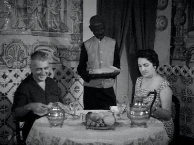
Manuel servindo a mesa para Gilberto e sua esposa. Segundo Freyre, "Manuel está há
muitos anos com a família".
As áreas de lazer providenciadas pelos jardins dos senhores no centro se
transferiram para as áreas mais
frescas da Várzea (os bosques de Brennand), para a zona norte mais imediata (os campos da Jaqueira, o
lago
de Apipucos, o orto de Dois Irmãos) e para as praias da zona sul (Pina e Boa Viagem). Nascem também os
clubes de esporte fundados pelos senhores ingleses e seus admiradores que utilizaram os rios para a
prática
do remo e as várzeas para o futebol e outros esportes. Outros costumes da ociosidade inglesa também se
transferiram para o Recife, como o "Country Club", o "golf club" e os jóqueis para a
prática do hipismo. A
vida da diretoria inglesa contava também com hospital próprio, igreja anglicana própria e até um
cemitério
próprio. Todos ainda em funcionamento hoje, mantendo o caráter de espaços "exclusivos" para essa
camada da população.

Dividiam uma página do Diário de Pernambuco de 1860 um anúncio de corridas no Jockey
Club do Bongi e da fuga de dois escravizados, um homem em Goiana e uma mulher do bairro do
Monteiro em Recife.
Os empreendimentos ingleses de industrialização do açúcar e do algodão em Pernambuco criaram novos pólos
industriais mais afastados do porto, como em Paudalho e Carpina. Em Recife, novas fábricas tratavam o
açúcar e algodão que chegava do interior. Caxangá, Madalena, Torre, Várzea, Beberibe e Afogados são
exemplos
desses novos espaços fabris. Olinda e Jaboatão também assistiram seus entornos se industrializarem.
Os engenhos foram aos poucos perdendo espaço para as crescentes vilas, que transformaram-se em
alojamentos de operários. Os bairros que possuiam indústrias, e os outros
bairros ao redor, cresceram na
transição do século 19 para o 20. Exemplos são o Cordeiro, Iputinga, Bongi, Campo Grande, Encruzilhada,
Tejipió e Imbiribeira, sempre em torno de uma igreja, onde já se estabeleciam as vilas das fazendas.
Iniciou-se também o êxodo de famílias do interior para a capital em busca das oportunidades nas fábricas
e
dos serviços auxiliares que sustentavam esses negócios.
Parte desses serviços eram os trabalhos domésticos que passou a substituir o trabalho de escravidão das
decadentes casas-grandes.
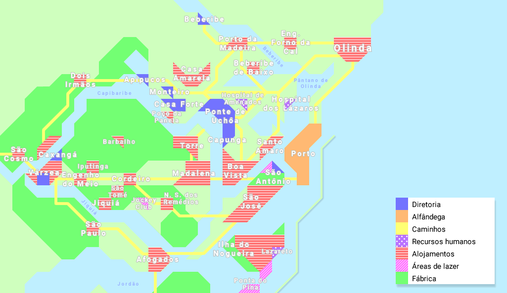
Esquema da cidade-fábrica no fim do século 19. Ocupando a Várzea, as margens norte do
Capibaribe e sul do Beberibe, os novos senhores da cidade expandiram também os alojamentos de
trabalhadores que foram ocupando os espaços à procura de serviços.
E para onde foram as senzalas? Durante o século 19, a cidade do Recife que funcionava como um porto, a
última ponta da produção pernambucana, passou a concentrar mais fortemente a diretoria, os alojamentos e
os
escritórios de serviço. Não que não houvesse mais ninguém na condição de escravidão, pelo contrário, as
estimativas
demográficas indicam que em 1850 10,9% da população era de pessoas escravizadas em Recife.
Enquanto
isso, as estimativas da zona da mata pernambucana apontam que 62,6% da população era escravizada
no
mesmo ano [13]. A busca por melhores condições de vida na capital que se intensificaria durante a virada
para o século 20 criaria uma nova categoria de alojamento para os trabalhadores
(e ex-escravizados) da
cidade-fábrica. As comunidades se organizavam ao redor das áreas de serviço da cidade em estruturas
conhecidas por mocambos. Durante o século 20, o poder público se mobilizou diversas vezes em
"ofensivas
contra os mocambos" com políticas públicas racistas que procuravam afastar essas famílias para fora dos
centros. Além dos mocambos levantados nos vazios e no entorno do centro do Recife, outros bairros
surgiram como
amontoados de mocambos, como o de Santo Amaro, mas essa ocupação não se limitava a uma região
específica da cidade.
Todo bairro que dispunha de serviços e, portanto, oferecia grande circulação de dinheiro, possuia
mocambos.
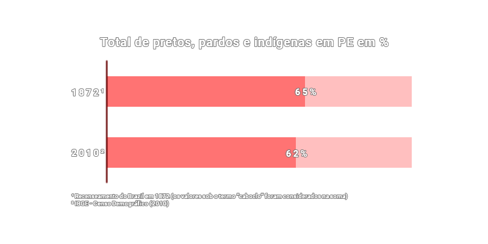
O período de tentativas pernambucanas de se separar do Brasil, motivadas pelo abuso da configuração
"imperial", nunca visou a liberdade negra. Pelo contrário, nesse período se intensificaram os métodos de
recursos humanos para a disciplina, castigo e despejo dos detratores e
"inválidos" do sistema de
exploração da cidade-fábrica. Nascem os manicômios, hospitais de "leprosos", sanatórios, prisões,
reformatórios, orfanatos e a força burguesa que traduz a violência utilizada para a defesa dos
interesses
dos senhores: a polícia.
Os ingleses passaram a influenciar o poder público. Uma das mudanças mais drásticas da vida urbana foi a
substituição das estradas e da navegação pelo transporte ferroviário. Os caminhos da cidade-fábrica,
agora explorados também como negócios dos ingleses. Na Europa, o advento da ferrovia servia para ligar a
produção industrial e seus pólos consumidores, ligava as indústrias e seus trabalhadores, ligava a
produção
industrial a seus portos e aduanas. Já fora da Europa, as ferrovias inglesas ligavam apenas as fábricas
aos portos.
Os trabalhadores que dessem um jeito de se deslocar. Assim, reinventou-se o escoamento da produção do
interior para
o porto do Recife. A linha de ferro de Limoeiro levava algodão para o porto de Recife, a do
Cabo levava
açúcar. As poucas linhas de passageiro transportavam as famílias inglesas de suas residências ao centro
comercial. Assim nasceram as linhas da Várzea e de Beberibe, por exemplo. Ao longo dos caminhos férreos,
novas povoações nasceram e foram crescendo. Foi assim que o caminho de Recife até Jaboatão foi se
urbanizando também.
Toda a dinâmica de linha de produção, de exploração de uma camada específica da população e de
manutenção
dessas pessoas na condição que estavam continuava. Produção sob condições escravistas para exportação, e
toda as estruturas que sustentavam esse esquema, muitas vezes explicitamente racistas, também se
mantinham.
Pela metade do século 20, outra ocupação do Recife traria uma nova reinvenção para o modelo de
cidade-fábrica. Com a segunda guerra mundial, as relações políticas globais fariam eclodir uma nova
potência
hegemônica que alterou diretamente como o Recife se organizava.
🚀🚀🚀
The American Way of Recife
A concessão do litoral aos Estados Unidos como "trampolim da vitória", jargão de propaganda de guerra
para a
justificativa da ocupação americana do território brasileiro [14], traria outras mudanças radicais em
como a
cidade-fábrica se desenhou. Das estruturas instaladas no Recife pelo exército dos Estados Unidos
encontravam-se a base aérea, um hospital de campo, um campo de treinamento militar no próprio Recife
Antigo,
uma base burocrática na Avenida Guararapes, entre outros equipamentos, além de massiva propaganda sobre
a
guerra, que mudaram o comportamento da cidade em "tempos de exceção" [15].
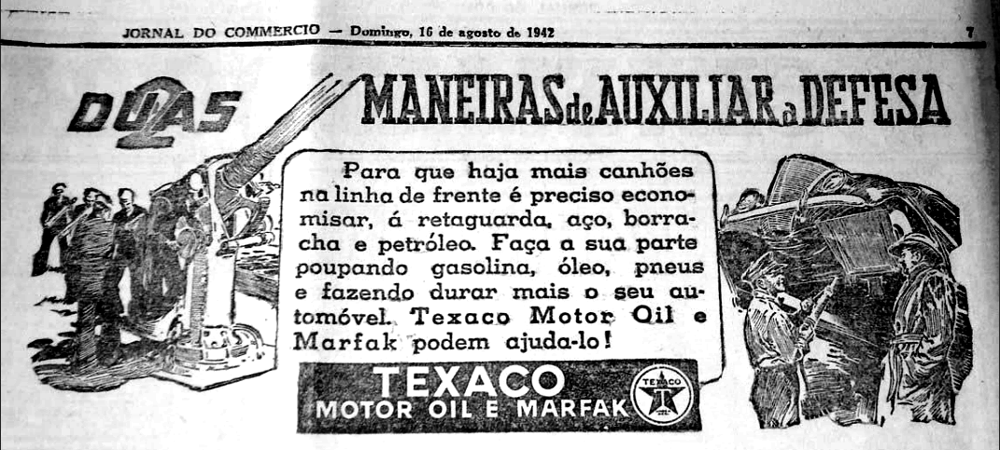
Anúncio da Texaco, indústria americana de combustível, no Jornal do Commercio buscando monetizar sobre
os esforços de guerra.
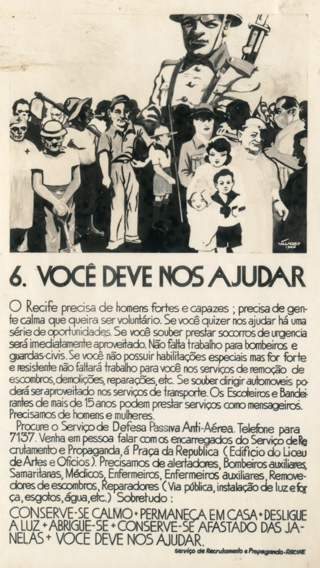
Pôster de concientização do Serviço de Recrutamento e Propaganda do Recife em caso de ataque contra
a cidade, já que era uma importante base americana.
Um outro fator importante que impulsionaria a mudança estrutural da cidade: já anos antes da ocupação
americana, o Recife havia recebido seu primeiro automóvel. Uma grande reforma no bairro do Recife
na década
de 1910 demoliu o bairro original visando reproduzir as reformas urbanas de Londres e Paris do final do
século 19. O
que havia se iniciado com as reformas do bairro do Recife veio a se intensificar depois da segunda
guerra.
Pernambuco (e o Brasil) tornou-se mercado da indústria automobilística americana e seu "sonho".
Iniciava-se a
popularização do carro, no lugar do bonde e do trem, e da busca por uma maior individualidade e
consumismo.
O resultado? Um novo fracasso econômico à Pernambuco (que perdura até hoje) que foi usado como
justificativa
para a manutenção da exploração das pessoas racializadas. A nova configuração global obrigou o Recife a
tornar-se um pólo de consumo. As antigas áreas de produção foram se transformando e novas fábricas para o
consumo foram aparecendo mais distantes do centro. Assim apareceram os empreendimentos às margens das
BR-101 e BR-232,
por exemplo. Sempre com o auxílio do poder público. Como de costume, as indústrias de consumo apenas
reproduziram o que se inventava fora com a mão de obra mais barata dos "países em desenvolvimento", e
muitas vezes com matéria-prima brasileira. A Coca-Cola, a Texaco, a General Motors e a General Electric
são exemplos.
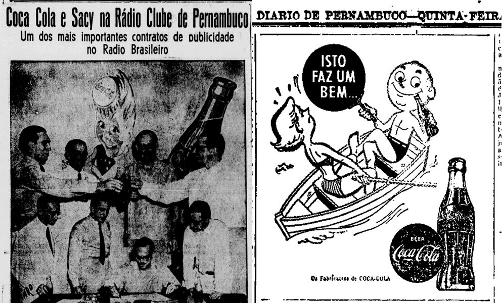
Anúncios da Coca-Cola em atividades da cidade no Diário de Pernambuco na década de 40.
A diretoria ganhava uma nova casa também. Os palácios do centro e os casarões
às margens do Capibaribe
não pareciam tão fancy anymore™. Torres altíssimas passaram a abrigar uma grande comunidade que
se
identificava com o padrão de consumo que as novas indústrias vomitavam dos Estados Unidos. Shoppings
Centers aos poucos se transformam nas novas áreas de lazer das classes
de poder político. Essa nova classe dominante não precisava mais da presença física de seus
colonizadores: os próprios senhores brasileiros passaram a agir como eles, consumir como eles, falar
como eles, pensar como eles e defender a moral e costume da tradição liberal americana, apesar de uma
real ocupação militar americana ter acontecido durante a segunda guerra. Ao mesmo tempo, com a explosão
de mais "oportunidades" nos centros urbanos, mais famílias de trabalhadores continuaram o movimento de
êxodo rural, com as mesmas ou piores condições de trabalho.
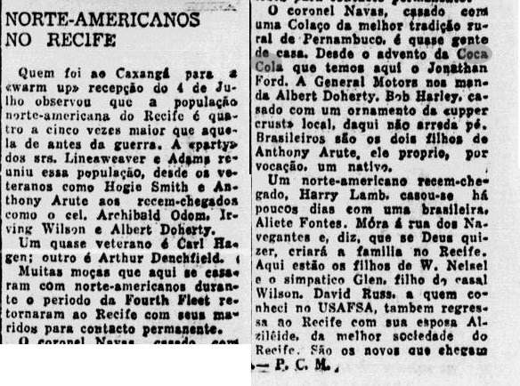
Os jornais pernambucanos não mediam esforços para vender uma imagem de superioridade às coisas
americanas. O Diário de Pernambuco, por exemplo, foi veículo de notas como essa.
A ocupação americana em Pernambuco talvez seja subestimada frente ao real impacto que ela
causou à organização da cidade e à vida dos recifenses. A construção da base aérea do Ibura Field
viria após a desocupação tornar-se o aeroporto internacional da cidade, mais uma alfândega que em Recife ajudou no enfraquecimento do movimento ferroviário.
Também, o governador-interventor Agamenon Magalhães cedeu o hospital Otávio de Freitas para o exército
americano, que o renomeou durante a ocupação para Atlanta Recreational Center e o transformou em
hotel de veraneio dos soldados.
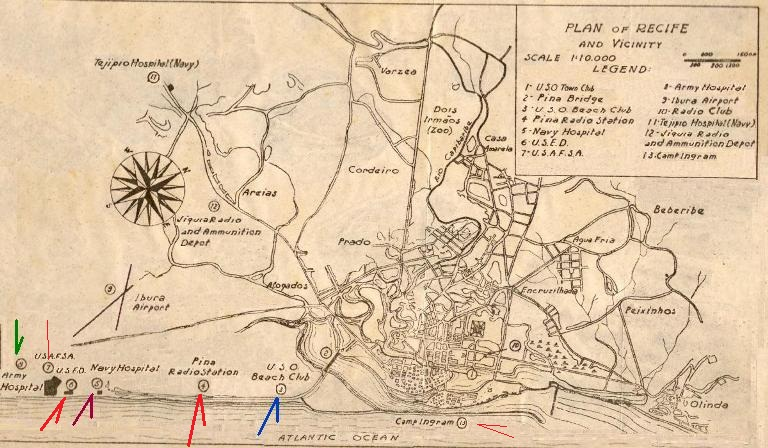
"Plano do Recife e Vizinhança". Mapa da ocupação americana no Recife, em sua maior parte na zona sul.
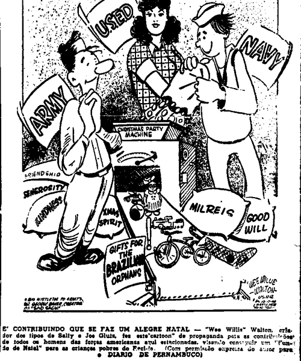
Propaganda americana no Diário de Pernambuco mostrando o benevolente exército produzindo brinquedos
para "órfãos brasileiros".
A presença americana no Recife dentro dessa nova configuração global influenciou fortemente
não apenas o estilo de vida dos indivíduos, mas o poder político e sua ideologia. Junto do despejo da
produção industrial americana, vieram também os programas para enfraquecer as organizações sociais e
sindicais, para manter distante a "ameaça comunista". O programa Aliança para o Progresso que,
ironicamente, apoiou os programas de moradia popular do Recife da segunda metade do século 20 e o
programa educacional de Paulo Freire, visava criar "ilhas de sanidade" em locais específicos da América
Latina. Comparado ao "Plano Marshall" na Europa, alega-se que os investimentos americanos no velho
continente reconstruíram e fortaleceram uma Europa destroçada pela guerra, enquanto na América Latina
não, porque os povos latinos ainda não conheciam nem seus próprios problemas [16]. Entretanto, o
financiamento massivo de uma políticas liberais dentro de um território extremamente desigual como o
Brasil não resultaria em nada mais além de mais exploração e reinvenção dos mecanismos de opressão.
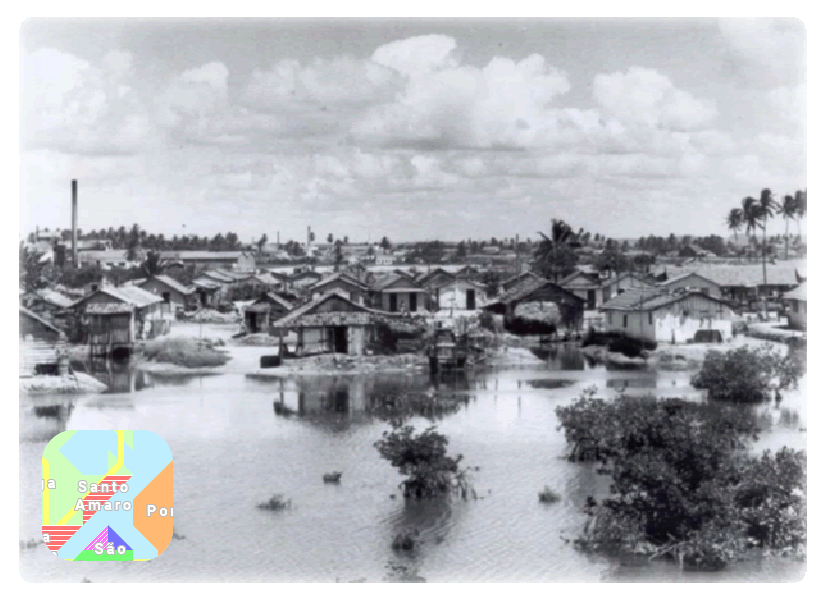
Mocambos em Santo Amaro. Ao mesmo tempo que se celebrava a "bolha de sanidade" americana na zona sul da
cidade, essa era a realidade do povo recifense. Os mocambos se transformaram em problema policial e
político que mobilizou a burguesia da época para sua "erradicação" com participação dos Estados Unidos
[16].
O carro significou também um modo prático de se deslocar pelos caminhos da
cidade-fábrica que não eram
cobertos por trilhos. Em planejamento, isso significou o início da ocupação de áreas ainda isoladas.
Nasceram assim novos bairros, alojamentos da classe trabalhadora, derivados de
grandes lotes da propriedade dos antigos senhores e pelos lotes financiados pela União como o Engenho do
Meio, Peixinhos e Areias. Nasceu
também a atualização dos mocambos: as favelas, para aqueles que não podiam comprar suas moradias.
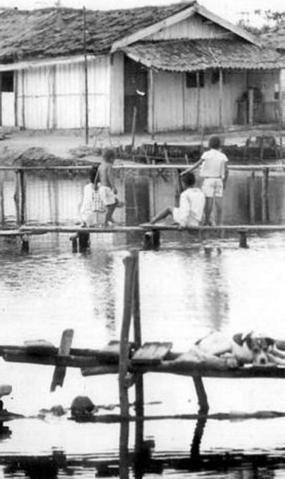
Fotografia de André Gerard da comunidade do Coque em 1970. O Coque localiza-se entre a zona sul e o
centro da cidade.
Da mesma forma que os mocambos, as favelas ocuparam os locais próximos aos serviços em busca de
oportunidades de
trabalho, reinvindicando a posse de áreas ainda não utilizadas em todas as partes da cidade, do centro
até
as áreas mais limítrofes como a Guabiraba, incluindo os morros e os alagados. O carro facilitou a
ligação desses
espaços
com as demais partes da cidade-fábrica, bem como facilitou a intervenção dos recursos humanos dos
poderes políticos contra essa camada da população.
E assim como as antigas aldeias, os pelourinhos, os lazaretos e outras instituições
para a "correção" de
indivíduos, novas formas de aprisionamento e punição passaram a vigiar os trabalhadores do Recife.
Ainda hoje, quem decide quem serve e não serve para a vida em sociedade é a polícia e as formas de
policiamento dos corpos da ideologia dominante. O descarte dos indesejáveis se dá hoje nas delegacias,
instituições de reeducação,
clínicas de reabilitação, prisões, penitenciárias ou com a execução direta da classe trabalhadora, negra
em sua
massiva maioria.

A propaganda de TV do "Shopping Center Recife Boa Viagem" explorava o modelo do sonho americano de
consumo e apela para a reprodução do que se via no cinema da época. De lá para cá a ideologia americana
não apenas permaneceu como tornou-se tão sedimentada que questioná-la é um comportamento desviante.
Setores de épocas diferentes da cidade-fábrica continuam a existir, convivendo entre si, mas lideradas e
organizadas pelo poder da vez. Ainda possuimos uma diretoria, áreas de lazer da classe dominante, alfândega, recursos humanos, fábricas, alojamentos e caminhos, vias de comunicação, entre as
estruturas
dessa linha de produção.
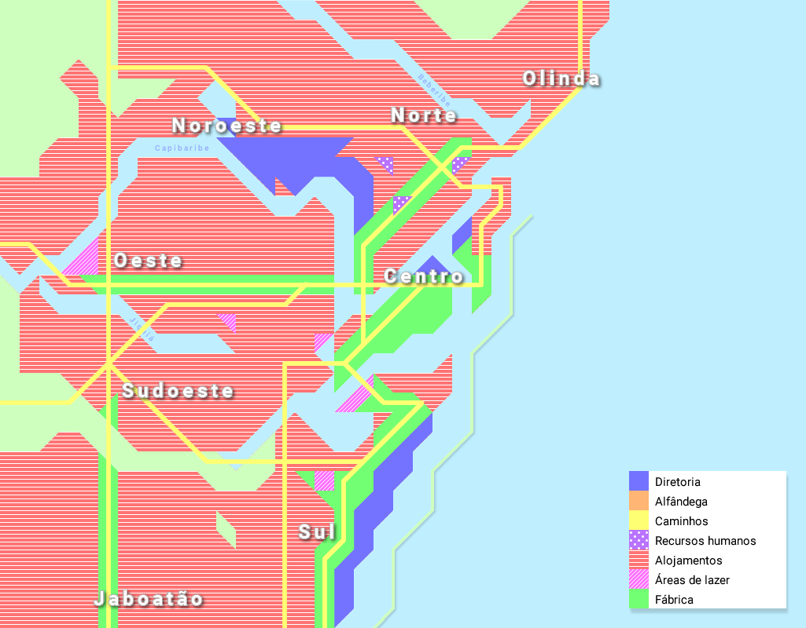
O plano da cidade-fábrica organizado pelas RPAs do Recife hoje.
●●●
A Cidade-Fábrica Hoje
Desde a segunda metade do século 20, a diretoria da cidade do Recife
deslocou-se para a zona sul. Não é que os antigos centros do poder desapareceram, Casa Forte e Apipucos
continuam atuantes, por exemplo. Mas Boa Viagem e o Pina, locais onde concentrou-se o capital americano,
abrigam hoje grande parte do poder político e econômico da cidade. É lá onde ficam os escritórios das
grandes construtoras que controlam as políticas de moradia da cidade.
A construção do Riomar estressa a relação dos carros-versus-pessoas. De um lado, extensos
estacionamentos e torres de negócios. Do outro, comunidades palafitas que por vezes precisam submeter seus
corpos a atravessar rodovias movimentadas para acessar o transporte público.